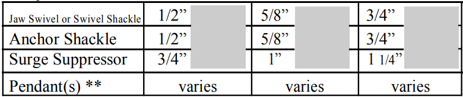

SURGE SUPPRESSOR
Dampening ..... Dampening ..... Dampening
If your mooring is subjected to a lengthy fetch or high seas you may want to consider adding our IMS Surge Suppressor to your system. While thousands of elastic down lines are in use today, IMS has taken that proven product and modified it for use above the water line.
IMS is offering three unique surge suppressors. These pendants will greatly mitigate the adverse effects of storm/wave surge. Our surge suppressor is a shock absorbing pendant that utilizes multi strand industrial rubber woven onto a 16/8 braided polyester rope.
Components *
* Components above are examples only and not a recommendation.
** When Dyneema pendants are used with an IMS S urge Suppressor Mooring Pendant assemby we denote that arrangement on IMS Ultimate Mooring Pendant. This is due to dyneema being much less susceptable to chafing than other materials commonly utilized.
If your mooring system could utilize additional dampening, this is one of the most cost effective methods we know of.
Due to the potential of rotational torquing of the rubber filiments, a swivel is required between the mooring buoy and the surge suppressor.